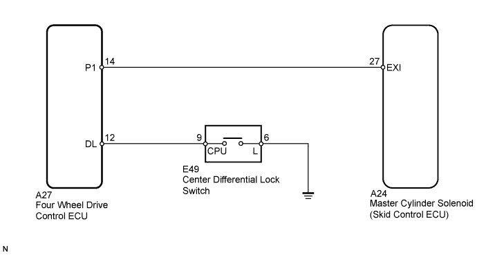
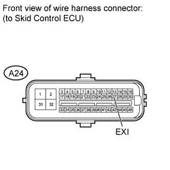
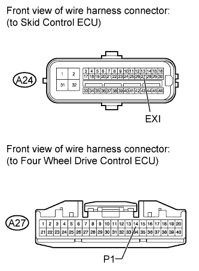

DTC C1340/47 Center Differential Lock Circuit |
| DTC Code | DTC Detection Condition | Trouble Area |
| C1340/47 | When the terminal IG1 voltage is between 10 and 14 V and there is an open in the center differential lock circuit for 2 seconds or more. |
|

| 1.INSPECT SKID CONTROL ECU (EXI TERMINAL) |
 |
Disconnect the A24 skid control ECU connector.
Turn the engine switch on (IG).
Measure the voltage according to the value(s) in the table below.
| Tester Connection | Condition | Specified Condition |
| A24-27 (EXI) - Body ground | Center differential locked (Center differential lock switch on) | Below 1.5 V |
| A24-27 (EXI) - Body ground | Center differential free (Center differential lock switch off) | 11 to 14 V |
| Result | Proceed to | |
| NG | A | |
| OK | LHD | B |
| RHD | C | |
|
| ||||
|
| ||||
| A | |
| 2.INSPECT CENTER DIFFERENTIAL LOCK SWITCH |
 |
Remove the center differential lock switch (Click here).
Measure the resistance according to the value(s) in the table below.
| Tester Connection | Switch Condition | Specified Condition |
| 6 (L) - 9 (CPU) | Switch pressed and held | Below 1 Ω |
| Switch not pressed | 10 kΩ or higher |
|
| ||||
| OK | |
| 3.INSPECT FOUR WHEEL DRIVE CONTROL ECU |
Check the center differential lock system (Click here).
|
| ||||
| OK | |
| 4.CHECK HARNESS AND CONNECTOR (FOUR WHEEL DRIVE CONTROL ECU - CENTER DIFFERENTIAL LOCK SWITCH) |
Disconnect the A27 four wheel drive control ECU connector.

Measure the resistance according to the value(s) in the table below.
| Tester Connection | Condition | Specified Condition |
| A27-12 (DL) - E49-9 (CPU) | Always | Below 1 Ω |
| A27-12 (DL) - Body ground | Always | 10 kΩ or higher |
| E49-6 (L) - Body ground | Always | Below 1 Ω |
|
| ||||
| OK | |
| 5.CHECK HARNESS AND CONNECTOR (SKID CONTROL ECU - FOUR WHEEL DRIVE CONTROL ECU) |
 |
Disconnect the A24 skid control ECU connector.
Measure the resistance according to the value(s) in the table below.
| Tester Connection | Condition | Specified Condition |
| A24-27 (EXI) - A24-14 (P1) | Always | Below 1 Ω |
| A24-27 (EXI) - Body ground | Always | 10 kΩ or higher |
| Result | Proceed to | |
| NG | A | |
| OK | LHD | B |
| RHD | C | |
|
| ||||
|
| ||||
| A | ||
| ||